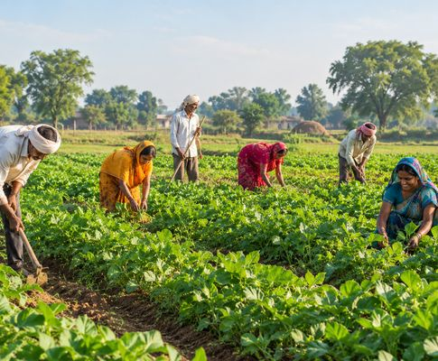

Gramin Saathi is a platform dedicated to helping farmers, rural businesses and local communities grow together through simple, reliable agricultural knowledge.
We bring organic farming methods, government scheme information, irrigation tips and crop guidance to villages in language every farmer understands, so good decisions are never out of reach.

To give every farmer reliable, easy-to-understand farming information, so they can save cost, protect their soil and earn a better living from their land.
Practical guidance on the topics that matter most on the farm.
Chemical-free methods, natural fertilizers and soil care that bring better prices.
Learn more →PM Kisan, subsidies and loans explained simply, with how to apply.
Learn more →Drip and smart irrigation tips that save water and increase yield.
Learn more →Right seed, right season and right care for a healthy harvest.
Learn more →Read simple guides, blogs and success stories on farming, schemes and new techniques.
Put the step-by-step advice to work on your own field, and apply for schemes with confidence.
Reach out to our Farmer Support team whenever you are stuck and grow your income season after season.
Real experiences from farmers across India who trust Gramin Saathi.
Join the Gramin Saathi farmer network and get farming help straight from our team.